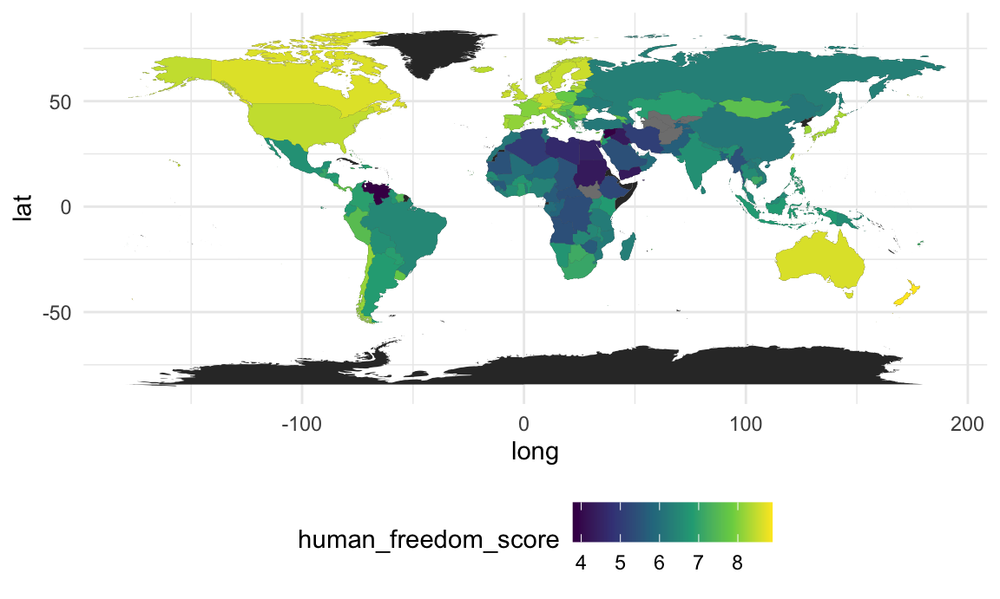

Cleaning datasets
whr_df =
read_excel("./data/WHR20_Data.xls") %>%
janitor::clean_names() %>%
arrange(country_name) %>%
rename(countries = country_name) %>%
select(-regional_indicator, -standard_error_of_ladder_score, -upperwhisker, -lowerwhisker)
hfi_df =
read_excel("./data/human-freedom-index-2019.xlsx",
skip = 4, na = "-") %>%
janitor::clean_names() %>%
filter(year == "2017") %>%
arrange(countries) %>%
select(countries, human_freedom_score, procedural_justice:personal_freedom_score, government_consumption:economic_freedom_score)Merging datasets
merged_df =
full_join(whr_df, hfi_df, by = "countries") %>%
select(countries, ladder_score, human_freedom_score, personal_freedom_score, economic_freedom_score,
religion, association, assembly, movement, inheritance_rights, security_safety,
disapperances_conflicts_and_terrorism, rule_of_law, homicide, size_of_government)
write.csv(merged_df, "./data/merged_df.csv")First attempt at making a world map
world =
map_data("world")
whr_map =
merged_df %>%
select(countries, ladder_score)
ggplot()+
geom_map(data = world, map = world, aes(x = long, y = lat, group = group, map_id = region))+
geom_map(data = whr_map, map = world, aes(fill = ladder_score, map_id = countries))## Warning: Ignoring unknown aesthetics: x, y
hfi_map =
merged_df %>%
select(countries, human_freedom_score)
ggplot()+
geom_map(data = world, map = world, aes(x = long, y = lat, group = group, map_id = region))+
geom_map(data = hfi_map, map = world, aes(fill = human_freedom_score, map_id = countries))## Warning: Ignoring unknown aesthetics: x, yThese maps have a couple of flaws:
1. Not interactive
2. Some of the country names do not match with the way they are written in the world map data, so need to recode different country names in one of the two datasets
3. They’re cute but not THAT cute
Thoughts/ideas:
- I believe there are some interactive tools (shiny, plotly) that we could use, but we need to have the longitude and latitude information for the countries in our dataset to build some of the maps that I encountered in my search. Should consider merging the world dataset in with ours (once country names match) for the map so that is not an issue.
- Could look into using leaflet. I spent a bit of time examining but was not able to find anything useful. There are some projections, but the code looks complex and I am not sure what the best mechanism is for this.
- Tried using plotly, was very slow to process and giving me an error (Error: vector memory exhausted(limit reached?)) that I believe is related to the amount of memory being asked for by plotly from my computer, so, yeah, not great.
Things to add: - html website creation - video creation - linear regression - nordic exceptionalism subanalysis